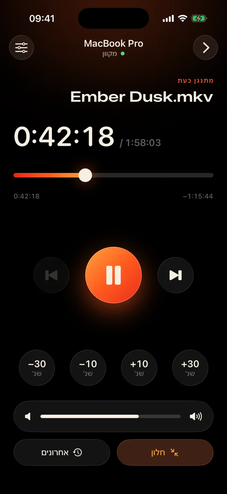
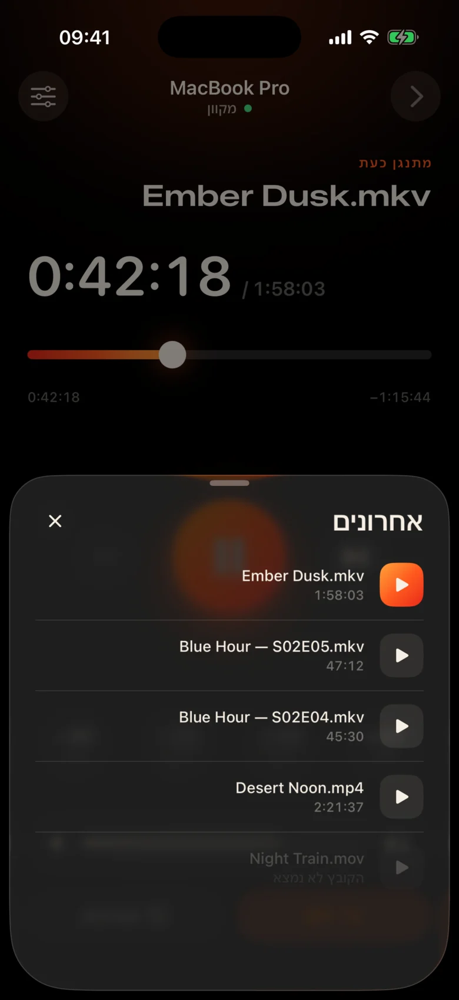
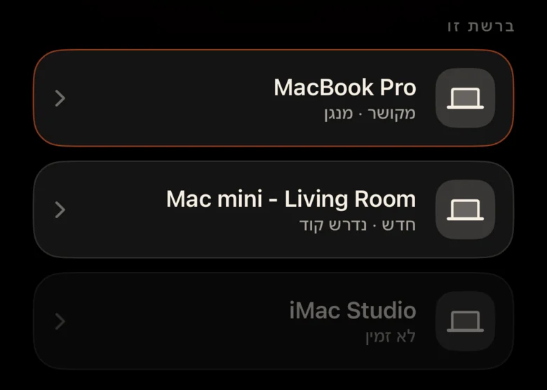
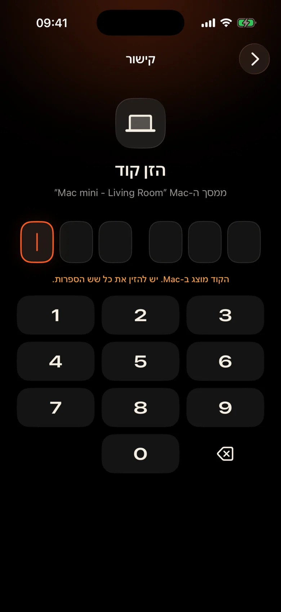

ה-Mac נמצא מעבר לחדר
זה מחובר למקרן על ידי הקיר. כל הפסקה פירושה לקום, למצוא את משטח העקיבה בחושך ולפזול לעבר פס בקרה זעיר.
Kinrox: הקש על הפסקה בטלפון שבידך.
Kinrox מנגן כל סרטון ב-Mac שלך - והופך את iPhone לשלט שלו. MacBook במקרן, אתה על הספה: השהה, קפוץ אחורה 10 שניות, הנמיך את הווליום או התחל את הפרק הבא מבלי לעזוב את השמיכה.


זה מחובר למקרן על ידי הקיר. כל הפסקה פירושה לקום, למצוא את משטח העקיבה בחושך ולפזול לעבר פס בקרה זעיר.
Kinrox: הקש על הפסקה בטלפון שבידך.
לחישות בסצנה אחת, פיצוצים בסצנה הבאה - ומישהו כבר ישן בחדר הסמוך.
Kinrox: מחוון עוצמת הקול ממש מתחת לאגודל.
לוחות אינטרנט עם כתובות IP וסיסמאות, כרטיסיית דפדפן שנרדמת, כפתורים שנועדו לשולחן עבודה - לא לספה.
Kinrox: מוצא את ה-Mac שלך בעצמו, זוג עם קוד אחד.

מטרות גדולות, נושא חם אפל וטפיחה קלה של הפטיקה מתחת לכל לחיצה. אתה יכול להשתמש בו מבלי להסיט את מבטו מהסרט.
כל פקד גדול מספיק כדי ללחוץ עליו גם כשאתם חצי ישנים.
פספסת שורה? לחיצה אחת אחורה. דלג על המבוא עם שניים.
עוצמת הקול של Kinrox עצמו, מ-0 עד 100. עוצמת הקול של המערכת של Mac נשארת ללא נגיעה.
הקובץ הקודם והבא מאותה תיקייה, בסדר Finder.
בחר משהו שצפית בו קודם - הוא נפתח ב-Mac.
גרור את ציר הזמן לכל רגע, החלף מסך מלא מהספה.
אין כתובות IP, אין סיסמאות, אין חשבון. לאחר הקוד הראשון ה-iPhone שלך מתחבר מחדש מעצמו.
גרור קובץ לתוך Kinrox או הקש ⌘ O. השרת המרוחק מופעל כברירת מחדל.
Kinrox מופיע בפני עצמו כאשר שני המכשירים מחוברים לאותו Wi-Fi.

ה-Mac מציג קוד שחי במשך שתי דקות. שלושה ניסיונות שגויים וזה נעלם.


Alex’s iPhone רוצה לשלוט ב-Kinrox. יש להזין קוד זה בטלפון.
 תוקף הקוד יפוג בעוד 1:47
תוקף הקוד יפוג בעוד 1:47
הסרטון הוא הממשק. שכבת זכוכית דקה מופיעה כשצריך אותה ומסתתרת לאחר שלוש שניות.

בנוי על libmpv, המנוע מאחורי mpv ו-IINA. בחר אודיו וכתוביות משובצות או חיצוניות. VideoToolbox מטפל בפענוח חומרה.
Kinrox מסדר את הסרטונים בתיקייה ומתחיל את הבא כשפרק מסתיים - "2" לפני "10", כמו Finder.
מקשי מקלדת ⏯, מרכז בקרה ושליטה כעת Kinrox. עד 20 קבצים אחרונים ממתינים במסך ההתחלה.
Mac ו-iPhone שלך מחליפים פקודות השמעה ישירות דרך הרשת המקומית שלך. הסרטונים שלך נשארים ב-Mac.
גילוי באמצעות Bonjour, חיבורים רק מרשת המשנה שלך. כתובות ציבוריות וסלולר מסורבות.
כל פקודה עוברת בערוץ מוצפן. אסימוני התאמה חיים במחזיק המפתחות בשני המכשירים.
X25519HKDF-SHA256ChaCha20-Poly1305אין חשבונות או ניתוח שימוש. ה-Mac בודק עדכון ציבורי מדי יום ללא מזהים ייחודיים או פרופיל מערכת. באתר זה אין ניתוחים או עוגיות.
השלט רואה כותרות ומשכי זמן, לעולם לא נתיבי קבצים. פתיחת קובץ אחרון נפתרה ב-Mac.
Kinrox כתוב ב-Swift 6 ו-SwiftUI על גבי libmpv. כל שורה של הנגן, השלט והפרוטוקול נמצאים ב-GitHub.
בנה מהמקור# Xcode 26.5, XcodeGen and mpv from Homebrew
brew install xcodegen mpv pkg-config
git clone https://github.com/awaik/Kinrox.git
cd Kinrox
cp -n Config/Signing.local.xcconfig.example \
Config/Signing.local.xcconfig
# Set your team: docs/runbooks/RUNBOOK-BUILD-AND-SIGNING.md
./Scripts/check-env.sh
./Scripts/generate.sh
xcodebuild -workspace Kinrox.xcworkspace \
-scheme PlayerMac -configuration Debug \
-destination 'platform=macOS,arch=arm64' \
-derivedDataPath DerivedData build
open DerivedData/Build/Products/Debug/Kinrox.appהשמעה ושלט רחוק פועלים ללא גישה לאינטרנט כאשר Mac ו-iPhone חולקים רשת Wi-Fi. ה-Mac משתמש ב-HTTPS לבדיקות עדכונים יומיות ומוריד עדכון כאשר אתה בוחר להתקין אותו.
כן. Kinrox מנגן בכל מה שה-Mac שלך מציג - מקרן, טלוויזיה דרך HDMI או צג המחובר ל-AirPlay.
Macs עם Apple silicon ב-macOS 14 Sonoma ואילך, ו-iPhones ב-iOS 17 ומעלה. Intel Macs אינם נתמכים עדיין.
כן. כל iPhone מתחבר פעם אחת עם קוד משלו; ניתן לחבר עד ארבעה שלטים בו-זמנית. אתה יכול לבטל כל אחד מהם בהגדרות הנגן.
כן. ב-Mac, השתמש בלחצן אודיו וכתוביות או בתפריטי אודיו וכתוביות. בחר רצועות מוטמעות, מצא קבצים חיצוניים בתיקיות מקוננות או כבה כתוביות. Kinrox יכול לזכור את הבחירה שלך לפרק הבא.
כלום. Kinrox הוא חינמי וקוד פתוח תחת ה-GNU GPL v3.
Kinrox עבור Mac ו-iPhone. חינמי, קוד פתוח ומיועד לערבי סרטים.